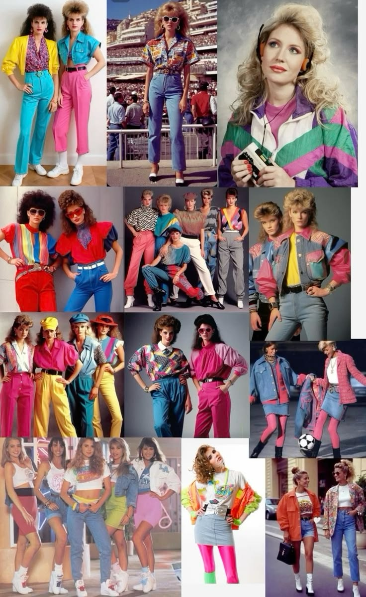
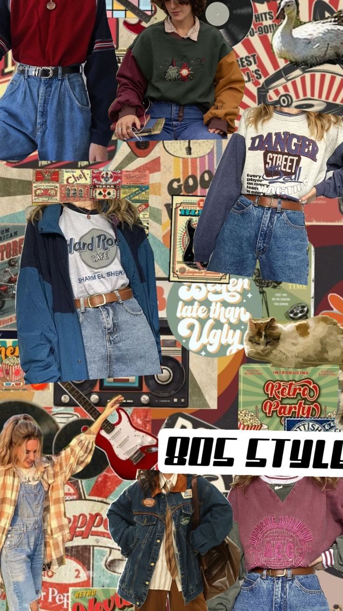
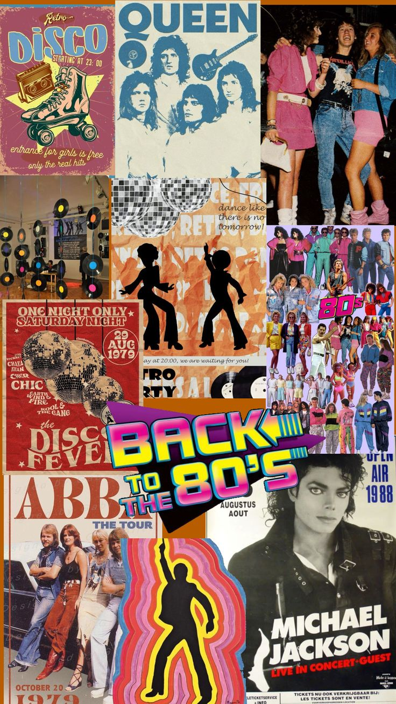

Yosseth

Los años 80 fueron una década llena de creatividad, colores brillantes y estilos llamativos. La ropa reflejaba personalidad y libertad.
Durante esta época se popularizaron prendas exageradas, hombreras grandes, pantalones ajustados y chaquetas de mezclilla.

La moda de los años 80 se caracterizó por colores neón, ropa deportiva, chaquetas de cuero y pantalones de cintura alta.
Las hombreras fueron uno de los elementos más populares, ya que daban una apariencia fuerte y elegante, especialmente en chaquetas y vestidos.
Los accesorios también eran importantes: cinturones grandes, gafas llamativas, guantes de encaje y joyería brillante.

Muchos artistas influyeron en la moda de los 80. Sus estilos se volvieron tendencia entre los jóvenes de todo el mundo.
Cantantes como Madonna popularizaron los accesorios llamativos, las pulseras múltiples y los peinados voluminosos.
Michael Jackson también marcó tendencia con chaquetas rojas, guantes brillantes y un estilo muy distintivo.